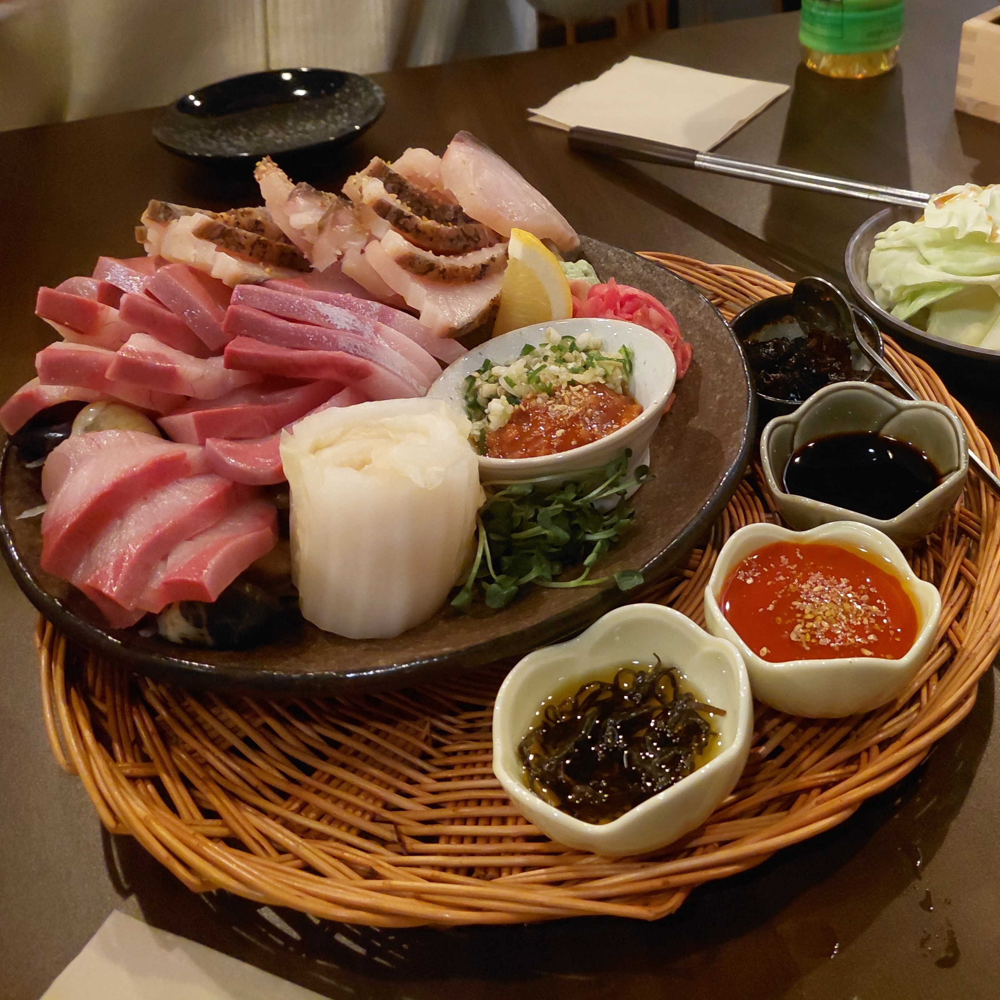

Hi! I'm Emily
I'm a student studying mathematics at Arizona State University who recently returned from a semester studying in Seoul, South Korea. During my time here, I had the opportunity to travel to Busan, South Korea's second largest city, twice, guided by my close friend who is from Busan. I fell in love with the city and its food, and I hope to share some of my favorite things about Busan with you!
Explore Busan

Food
From fresh hwe at a local gem to street food on Nampo-gil, Busan's food scene is not to be missed.
Attractions
Colorful hillside villages, stunning beaches, and bustling markets; there is something for every kind of traveler.